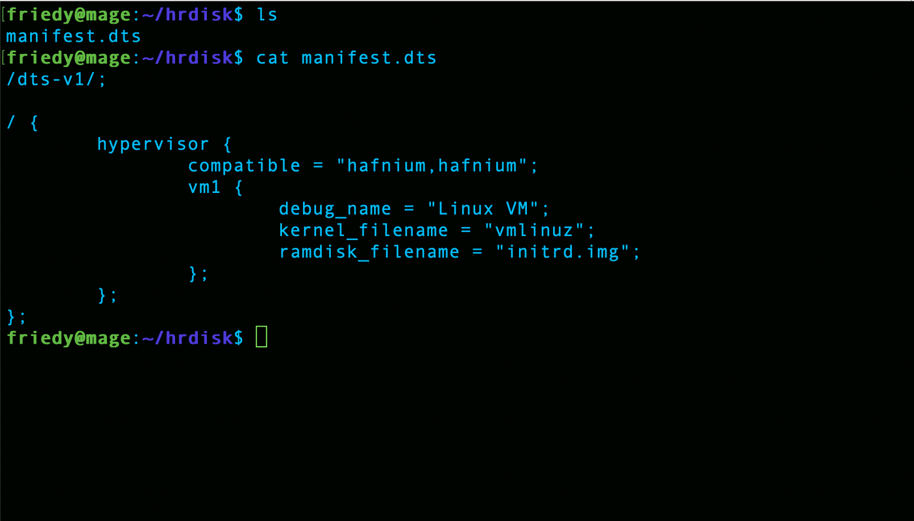
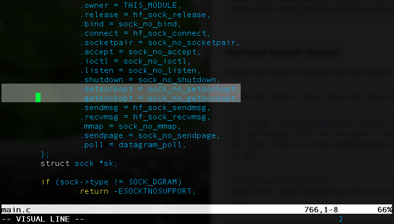
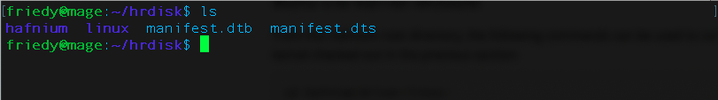
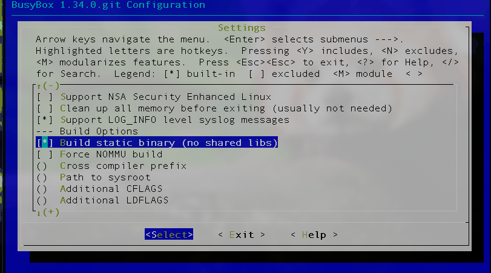
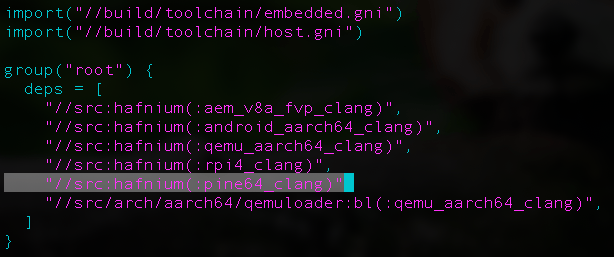

Installing Hafnium on the PINE64-LTS
Hafnium is a type-1 hypervisor that enforces memory isolation between the virtual machines running on top of it, installed directly on the underlying hardware. This walks through standing it up on a PINE64-LTS — a board Hafnium does not support out of the box, so part of the work is adding a new target to its build.
Firmware
Before anything else we need a secondary program loader, EL3 runtime firmware, and a bootloader.
ARM Trusted Firmware-A
TF-A provides the EL3 runtime secure monitor on the Pine A64-LTS. It is what switches between the normal and secure worlds.
git clone https://review.trustedfirmware.org/TF-A/trusted-firmware-a
cd trusted-firmware-a
git checkout v2.2
make PLAT=sun50i_a64 DEBUG=1 bl31
export BL31=$(pwd)/build/sun50i_a64/debug/bl31.binU-Boot
With trusted firmware in place, build U-Boot as the normal-world bootloader.
git clone https://gitlab.denx.de/u-boot/u-boot.git
cd u-boot
git checkout v2020.04-rc3
make pine64_plus_defconfig
make
export PATH=$PATH:$(pwd)/tools/
TF-A and U-Boot end up packaged together in u-boot-sunxi-with-spl.bin.
Later we write that to the SD card at an 8 KB offset, ahead of the first partition.
The Hafnium RAM disk
Create a directory called hrdisk, and inside it a file
manifest.dts:
/dts-v1/;
/ {
hypervisor {
compatible = "hafnium,hafnium";
vm1 {
debug_name = "Linux VM";
kernel_filename = "vmlinuz";
ramdisk_filename = "initrd.img";
};
};
};The manifest is how Hafnium learns what VMs to create. Here there is exactly one, running Linux.

Compile it to a device tree blob:
dtc -O dtb -o manifest.dtb -I dts manifest.dtsLinux
From the hrdisk directory, build the kernel:
git clone https://github.com/torvalds/linux.git
cd linux
ARCH=arm64 CROSS_COMPILE=aarch64-linux-gnu- make defconfig
ARCH=arm64 CROSS_COMPILE=aarch64-linux-gnu- make -j24The Hafnium kernel module
Back in hrdisk:
sudo apt install make libssl-dev flex bison python3 python3-serialgit clone --recurse-submodules https://hafnium.googlesource.com/hafnium \
&& (cd hafnium && f=`git rev-parse --git-dir`/hooks/commit-msg ; \
curl -Lo $f https://gerrit-review.googlesource.com/tools/hooks/commit-msg ; \
chmod +x $f)
To build the module against a newer kernel you have to delete lines 765 and 766 of
main.c.
cd hafnium/driver/linux/
ARCH=arm64 CROSS_COMPILE=aarch64-linux-gnu- KERNEL_PATH=../../../linux/ makeThe hrdisk directory should now look like this:

BusyBox
The Linux VM needs a userspace. Build a BusyBox root filesystem for the RAM disk —
again from hrdisk:
git clone git://busybox.net/busybox.git
cd busybox
ARCH=arm64 CROSS_COMPILE=aarch64-linux-gnu- make defconfig
ARCH=arm64 CROSS_COMPILE=aarch64-linux-gnu- make menuconfig
Before leaving menuconfig, make sure Settings > Build static binary (no
shared libs) is selected.

ARCH=arm64 CROSS_COMPILE=aarch64-linux-gnu- make -j24
ARCH=arm64 CROSS_COMPILE=aarch64-linux-gnu- make install
cd _install
mkdir proc
mkdir sys
mkdir -p etc/init.d
cat <<EOF > etc/init.d/rcS
#!bin/sh
mount -t proc none /proc
mount -t sysfs none /sys
EOF
chmod u+x etc/init.d/rcS
grep -v tty ../examples/inittab > ./etc/inittabCopy the Hafnium module into the RAM disk and pack it:
cp ../../hafnium/driver/linux/hafnium.ko .
find . | cpio -o -H newc | gzip > ../initrd.img
cd ..Building the RAM disk
mkdir disk
cd disk
mv ../busybox/initrd.img .
mv ../manifest.dtb .
mv ../linux/arch/arm64/boot/Image vmlinuz
find . | cpio -o > ../initrd.img; cd -
mkimage -A arm64 -T ramdisk -C none -n uInitrd -d initrd.img uInitrdAdding PINE64-LTS support
From hrdisk:
cd hafnium/project/referenceOpen BUILD.gn and add the new target to the list:
"//src:hafnium(:pine64_clang)"
Then append the toolchain definition to the bottom of the same file:
aarch64_toolchains("pine64") {
cpu = "cortex-a53"
origin_address = "0x4a000000"
boot_flow = "//src/boot_flow:linux"
console = "//project/reference/pine:uart"
iommu = "//src/iommu:absent"
gic_version = 2
heap_pages = 60
max_cpus = 4
max_vms = 16
toolchain_args = {
uart_base_address = "0x01C28000"
}
}Create two directories alongside it:
mkdir pine
mkdir pine64
cd pine
touch args.gni BUILD.gn uart.cargs.gni:
declare_args() {
uart_base_address = 0
}BUILD.gn:
import("args.gni")
source_set("uart") {
sources = [
"uart.c",
]
assert(uart_base_address != 0,
"\"uart_base_address\" must be defined for ${target_name}.")
defines = [
"UART_BASE=${uart_base_address}",
]
}
And uart.c — the actual console driver, which is the part that has to be
written by hand for a new board:
#include "hf/io.h"
#include "hf/mm.h"
#include "hf/mpool.h"
#include "hf/plat/console.h"
#define UART_RBR IO32_C(UART_BASE + 0x00)
#define UART_THR IO32_C(UART_BASE + 0x00)
#define UART_DLL IO32_C(UART_BASE + 0x00)
#define UART_IER IO32_C(UART_BASE + 0x04)
#define UART_DLM IO32_C(UART_BASE + 0x04)
#define UART_FCR IO32_C(UART_BASE + 0x08)
#define UART_LCR IO32_C(UART_BASE + 0x0C)
#define UART_MCR IO32_C(UART_BASE + 0x10)
#define UART_LSR IO32_C(UART_BASE + 0x14)
#define UART_MSR IO32_C(UART_BASE + 0x18)
#define UART_SCR IO32_C(UART_BASE + 0x1C)
void plat_console_init(void)
{
}
void plat_console_mm_init(struct mm_stage1_locked stage1_locked,
struct mpool *ppool)
{
mm_identity_map(stage1_locked, pa_init(UART_BASE),
pa_add(pa_init(UART_BASE), PAGE_SIZE),
MM_MODE_R | MM_MODE_W | MM_MODE_D, ppool);
}
void plat_console_putchar(char c)
{
/* Print a carriage-return as well. */
if (c == '\n') {
plat_console_putchar('\r');
}
/* Wait until the transmitter is no longer busy. */
while ((io_read32(UART_LSR) & 0x20) == 0) continue;
/* Write data to transmitter FIFO. */
memory_ordering_barrier();
io_write32(UART_THR, c);
memory_ordering_barrier();
}
char plat_console_getchar(void)
{
/* Wait for the transmitter to be ready to deliver a byte. */
while ((io_read32(UART_LSR) & 0x01) == 0) continue;
/* Read data from transmitter FIFO. */
return (char)(io_read32(UART_RBR));
}In pine64/BUILD.gn, a stub is enough:
source_set("pine64") {
}Then build Hafnium:
makeBooting
Partition the SD card. The first partition is the boot partition; the second is there for a root filesystem, which this walkthrough does not cover.
sudo dd if=/dev/zero of=/dev/sdX bs=1M count=1
sudo blockdev --rereadpt /dev/sdX
cat <<EOT | sudo sfdisk /dev/sdX
2M,2048M,c
,,L
EOT
sudo mkfs.ext4 /dev/sdX1
sudo mkfs.ext4 /dev/sdX2From the U-Boot directory, write the bootloader ahead of the first partition:
dd if=u-boot-sunxi-with-spl.bin of=/dev/sdX bs=1k seek=8
Mount the boot partition and copy everything across. The prebuilt
hafnium_pine64-lts_boot.tar.gz was hosted on my university OneDrive at
the time of writing and that link has since expired — if you need it,
email me.
sudo mount /dev/sdX1 /mnt
tar -xvf hafnium_pine64-lts_boot.tar.gz
cp -r ./boot /mnt
rm /mnt/hafnium.bin
rm /mnt/uInitrd
cp ~/hrdisk/hafnium/out/reference/pine64_clang/hafnium.bin /mnt
cp ~/hrdisk/uInitrd /mntEject the card, boot the PINE64-LTS, and Hafnium should come up with Linux on top of it.